بسم الله الرحمن الرحيم
Sayyid Abul Ala Maududi - Tafhim al-Qur'an - The Meaning of the Qur'an
 46.
Surah Al Ahqaf (The Wind Curved Sand Dunes)
46.
Surah Al Ahqaf (The Wind Curved Sand Dunes)
It is derived from the sentence idh andhara qauma-hu bil Ahqaf-i of verse 21.
It is determined by an historical event that has been mentioned in vv. 29-32. This incident of the visit of the jinn and their going back after listening to the Qur'an had occurred, according to agreed traditions of the Hadith and biographical literature, at the time when the Holy Prophet had halted at Makkah during his return journey from Ta'if to Makkah. And according to all authentic historical traditions he had gone to Ta'if three years before the Hijrah; therefore it is determined that this Surah was sent down towards the end of the 10th year or in the early part of the 11th year of the Prophethood.
The 10th year of the Prophethood was a year of extreme persecution and distress in the Holy prophet's life. The Quraish and the other tribes had continued their boycott of the Bani Hashim and the Muslims for three years and the Holy Prophet and the people of his family and Companions lay besieged in Shi'b Abi Talib. The Quraish had blocked up this locality from every side so that no supplies of any kind could reach the besieged people. Only during the Hajj season they were allowed to come out and buy some articles of necessity. But even at that time whenever Abu Lahab noticed any of them approaching the market place or a trading caravan he would call out to the merchants exhorting them to announce forbidding rates of their articles for them, and would pledge that he himself would buy those articles so that they did not suffer any loss. This boycott which continued uninterrupted for three years had broken the back of the Muslims and the Bani Hashim; so much so that at times they were even forced to eat grass and the leaves of trees.
At last, when the siege was lifted this year, Abu Talib, the Holy Prophet's uncle, who had been shielding him for ten long years, died, and hardly a month later his wife, Hadrat Khadijah, who had been a source of peace and consolation for him ever since the beginning of the call, also passed away. Because of these tragic incidents, which closely followed each other, the Holy Prophet used to refer to this year as the year of sorrow and grief.
After the death of Hadart Khadijah and Abu Talib the disbelievers of Makkah became even bolder against the Holy Prophet. They started treating him even more harshly. So much so that it became difficult for him to step out of his house. Of these days Ibn Hisham has related the incident that a Quraish scoundrel one day threw dust at him openly in the street.
At last, the Holy Prophet left for Ta'if with the intention that he should invite the Bani Thaqif to Islam, for even if they did not accept Islam, they might at least be persuaded to allow him to work for his mission peacefully. He did not have the facility of any conveyance at that time, and traveled all the way to Ta'if on foot. According to some traditions, he had gone there alone, but according to others, he was accompanied by Zaid bin Harithah. He stayed at Ta'if for a few days, and approached each of the chiefs and nobles of the Bani Thaqif and talked to him about his mission. But not only they refused to listen to him, but plainly gave him the notice that he should leave their city, for they feared that his preaching might "spoil" their younger generation. Thus, he was compelled to leave Ta'if. When he was leaving the city, the chiefs of Thaqif set their slaves and scoundrels behind him, who went on crying at him, abusing him and petting him with stones for a long way from either side of the road till he became broken down with wounds and his shoes were filled with blood. Wearied and exhausted he took shelter in the shade of the wall of a garden outside Ta'if, and prayed:
"O God, to Thee I complain of my weakness, little resource, and lowliness before men. O Most Merciful, Thou art the Lord of the weak, and Thou art my Lord. To whom wilt Thou confide me? To one afar who will misuse me?Or to an enemy to whom Thou hast given power over me?If Thou art not angry with me I care not. Thy favor is more wide for me. I take refuge in the light of Thy countenance by which the darkness is illumined, and the things of this world and the next are rightly ordered, lest Thy anger descend upon me or Thy wrath light upon me. It is for Thee to be satisfied until Thou art well pleased. There is no power and no might save in Thee." (Ibn Hisham:A. Guillaume's Translation, p. 193).
Grieved and heart broken when he returned and reached near Qarn al-Manazil, he felt as though the sky was overcast by clouds. He looked up and saw Gabriel in front of him, who called out:"Allah has heard the way your people have responded. He has, therefore, sent this angel in charge of the mountains. You may command him as you please." Then the angel of the mountains greeted him and submitted :"If you like I would overturn the mountains from either side upon these people." The Holy Prophet replied : "No, but I expect that Allah will create from their seed those who will worship none but Allah, the One." (Bukhari, Dhikr al Mala'ikah; Muslim: Kitab al-Maghazi; Nasa'i :Al-Bauth).
After this he went to stay for a few days at Makkah, perplexed as to how he would face the people of Makkah, who, he thought, would be still further emboldened against him after hearing what had happened at Ta'if. It was here that one night when he was reciting the Qur'an in the Prayer, a group of the jinn happened to pass by and listened to the Qur'an, believed in it, and returned to their people to preach Islam. Thus, Allah gave His Prophet the good news that if the men were running away from his invitation, there were many of the jinn, who had become its believers, and they were spreading his message among their own kind.
Such were the conditions when this Surah was sent down. Anyone who keeps this background in view, on the one hand, and studies this Surah, on the other, will have no doubt left in his mind that this is not at all the composition of Muhammad (upon whom be Allah's peace), but "a Revelation from the All Mighty, All Wise Allah." For nowhere in this Surah, from the beginning to the end, does one find even a tinge of the human feelings and reactions, which are naturally produced in a man who is passing through such hard conditions. Had it been the word of Muhammad (upon whom be Allah's peace) whom the occurrence of personal griefs one after the other and the countless and the recent bitter experience at Ta'if had caused extreme anguish and distress, it would have reflected in some degree the state of the mind of the man who was the subject of these afflictions and griefs. Consider the prayer that we have cited above: it contains his own language its every word is saturated with the feelings that he had at the time. But this Surah which was sent down precisely in the same period and was recited even by him under the same conditions, is absolutely free from every sign or trace of the time.
The subject matter of the Surah is to warn the disbelievers of the errors in which they were involved, and also resisted arrogantly, and were condemning the man who was trying to redeem them. They regarded the world as a useless and purposeless place where they were not answerable to anyone. They thought that invitation to Tauhid was false and stuck to the belief that their own deities were actually the associates of Allah. They were not inclined to believe that the Qur'an was the Word of the Lord of the worlds. They had a strange erroneous concept of apostleship on the basis of which they were proposing strange criteria of judging the Holy Prophet's claim to it. In their estimation one great proof of Islam's not being based on the truth was that their elders and important chiefs of the tribes and so called leaders of their nation were not accepting it and only a few young men, and some poor folks and some slaves had affirmed faith in it. They thought that Resurrection and life after death and the rewards and punishments of the Hereafter were fabrications whose occurrence was absolutely out of the question.
In this Surah each of these misconceptions has been refuted in a brief but rational way, and the disbelievers have been warned that if they would reject the invitation of the Qur'an and the Prophethood of the Prophet Muhammad (upon whom be Allah's peace) by prejudice and stubbornness instead of trying to understand its truth rationally, they would only be preparing for their own doom.
In the name of Allah, the Compassionate, the Merciful.
[1-2] Ha-Mim.1 The revelation of this Book is from the All-Mighty, All-Wise Allah.
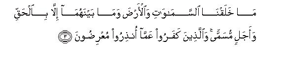
[3] We have created the heavens and the earth and all that lies between them with the truth and to last for an appointed term,2 but the disbelievers are turning away from the reality of which they have been warned.3
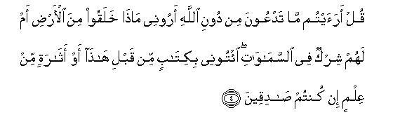
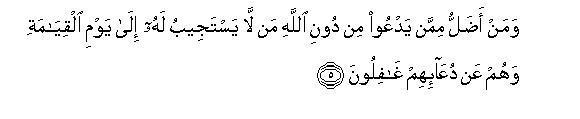
[4-6] O Prophet, say to them, "Have you ever seen with open eyes those whom you invoke instead of Allah? Show me what they have created in the world, or, have they any share in the creation and control of the heavens? Bring me a Book revealed before this, or produce some remnant of knowledge (in support of your beliefs) if you are truthful."4 And who could be further astray than the one who invokes, instead of Allah, those who cannot answer him till the Day of Resurrection?5 Nay, they are even unaware that they are being invoked.6 And when all mankind shall be gathered together, they will become enemies of those who invoked them and will disown their worship.7
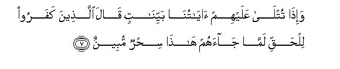
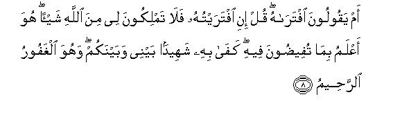
[7-8] Whenever Our clear Revelations are recited to them and the Truth comes before them, the disbelievers say, "This is plain magic."8 Do they mean to say that the Messenger himself has fabricated it?9 Say to them, "If I have fabricated it myself, you will not be able to do anything to save me from Allah's punishment. Allah knows full well whatever you utter. He is enough as a witness between me and you,10 and He is the All-Forgiving. the All-Merciful."11
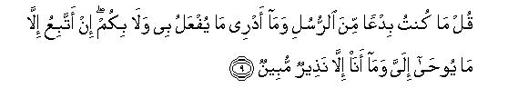
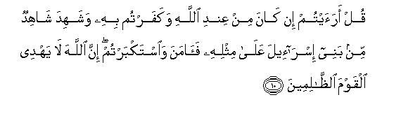
[9-10] Say to them, "I am not a novel Messenger, I do not know what shall befall you tomorrow nor what shall befall me. I only follow that which is revealed to me, and I am no more than a warner."12 O Prophet, say to them, "Have you ever considered that if this (Qur'an) were really from Allah, and yet you denied it, (what would be your end)?13 And a witness from among the children of Israel has already borne witness to the like of it; he believed while you showed arrogance.14 Allah does not show guidance to such wrongdoers."
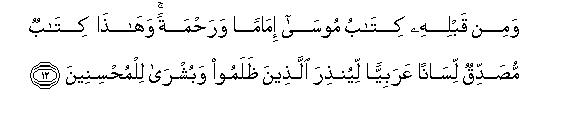
[11-12] Those who have refused to believe say with regard to those who have believed, "If it had been any good to believe in this Book, they would not have believed in it before us."15 As they have not received any guidance from it, they will surely say, "This is an ancient falsehood."16 Yet before it there has come the Book of Moses as a guide and a mercy, and this Book has been revealed to confirm it in the Arabic tongue so as to warn the wrongdoers17 and to give good news to those who have adopted the righteous conduct.
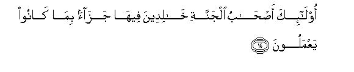
[13-14] Indeed, those who said, "Allah alone is our Lord," then remained steadfast, they shall neither neither have anything to fear nor shall they grieve.18 They all shall go to Paradise wherein they shall live for ever, a reward for the deeds they did in the world.
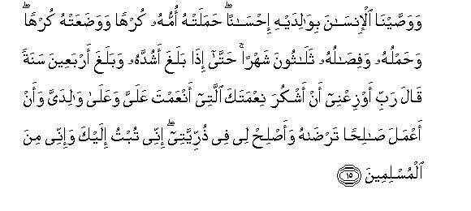
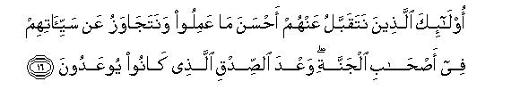
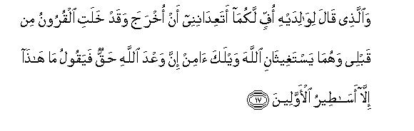
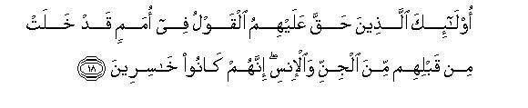
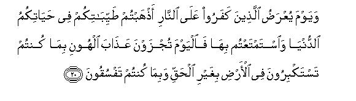
[15-20] We have enjoined man to treat his parents with kindness. His mother bore him with hardship and she gave him birth with hardship, and his bearing and his weaning took thirty months,19 until when he attained to his full strength and became forty years old, he said, "O my Lord, grant me the grace that I may thank You for the favors You have bestowed on me and on my parents, and that I should do such good works as may please You,20 and make my children also good to comfort me. I turn to You in penitence and I am of those who have surrendered to You (as Muslims). " From such people We accept the best of their deeds and overlook their evils.21 They will be among the dwellers of Paradise according to the true promise that has been made to them (here). But the one who said to his parents, "Fie upon you! what, do you frighten me with this that I shall be taken out of the grave after death? whereas many a generation has passed away before me (and none has risen from among them). The mother and father cry for Allah's help and say, "Believe, O wretch! Allah's promise is true." But he says, "These are nothing but tales of the ancient times." Such are the people against whom the decision of torment has already been decreed. They will also join those hosts of the jinns and men (of their own kind) who have passed away before them. Indeed, they are the losers.22 Each one of the two groups will have their ranks according to their deeds so that Allah may reward them fully for what they have done, and they shall not be wronged at all.23 When the disbelievers are mustered at the Fire, it will be said to them, "You have exhausted your share of the good things in your life of the world and you enjoyed them fully. Today you shall be punished with a torment of disgrace in consequence of the arrogance that you showed on the earth, without any right, and the transgressions that you committed."24
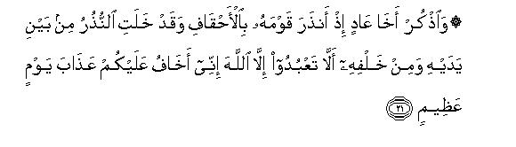
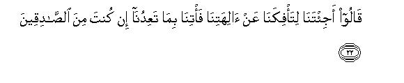

[21-23] And relate to them the story of the brother of 'Ad (Hud), when he warned his people in Ahqaf25 -and such warners had preceded as well as followed him-saying, "Worship none but Allah. I fear for you the torment of a dreadful day." They said, "Have you come to seduce us away from our own gods ? Well, bring down your torment with which you threaten us, if you are really truthful." He said, "The knowledge of this is with Allah.26 I am only conveying to you the message with which I have been sent. But I see that you are a people Sunk in ignorance."27
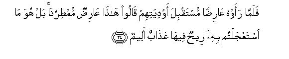
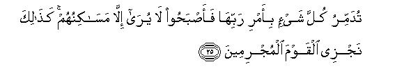
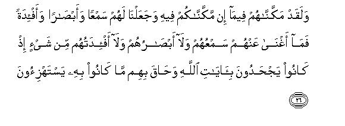
[24-26] Then, when they saw the torment coming towards their valleys, they said, "This is a cloud that will give us much rain."Nay,28 but this is the same thing which you asked to be hastened. This is a storm of wind bringing a painful torment. It will destroy everything by the Command of its Lord. Consequently, there remained nothing to be seen except their (empty) dwelling places. Thus do We recompense the culprits.29 We had given them that which We have not given you.30 We had given them ears and eyes and hearts, but nothing did their ears and their eyes and their hearts avail them, because they denied the Revelations of Allah,31 and they were encompassed by the same thing that they mocked.
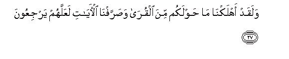
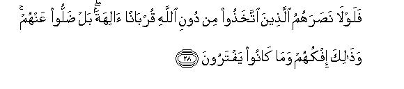
[27-28] We have destroyed many habitations around you. We sent Our Revelations to them over and over again in various ways that they might desist (from wrongdoing). Then, why did not those beings help them whom they had made their gods instead of Allah, and regarded them as a means of attaining nearness to Him?32 Nay, they were lost from them: and this was the end of their lies and their false beliefs that they had invented.
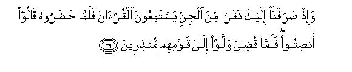
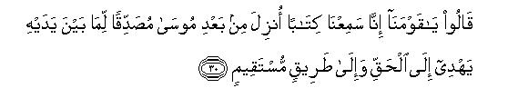
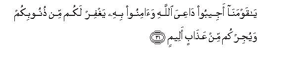
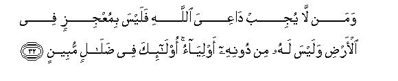
[29-32] (And recall the event) when We brought to you a group of jinns so that they might listen to the Qur'an.33 When they reached the place (where you were reciting it), they said to one another, "Be silent." When the recitation was over, they returned to their people as warners. They said to them, "O our people! We have just listened to a Book that has been sent down after Moses. It contains the Books that came before it and it guides to the Truth and to a Straight Way.34 O our people! Accept the invitation of the one calling to Allah and believe in him. Allah will forgive you your sins and will save you from a painful torment."35 And36 he who does not answer the one calling to Allah neither possesses any power in the earth to make Allah helpless nor has any protector and guardian to save him from Allah. Such people are involved in manifest error.
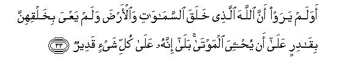
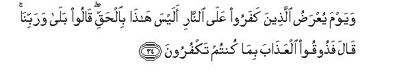
[33-34] Do they not see that God Who created the heavens and the earth and was not wearied by their creation, has surely the power to raise the dead to life! Why not! Surely He has power over everything. The Day the disbelievers are mustered at the Fire, they will be asked, "Is not this the Truth ?" They will say, "Yes, by our Lord (this is the very Truth!)." Allah will say, "Well, then taste the torment in consequence of your denying the Truth (in the world)."
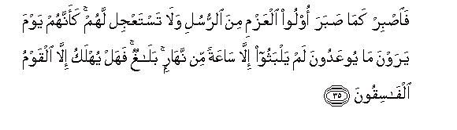
[35] Therefore, endure with patience, O Prophet, as did the Messengers endowed with the firmness of purpose,37 and do not be in haste concerning them. The day these people see that with which they are being threatened, it will so appear to them that they did not stay in the world for more than an hour of a day. The Message has been conveyed. Now, shall any other than the disobedient people be destroyed?
1For explanation, sec E. N. 1 of Surah Az-Zumar, E. N. 1 of AI-Jathiyah and also E. N. 1 of As-Sajdah for understanding the true spirit of this introduction.
2For explanation, ace Al-An'am: 73, Yunus: 5-6, Ibrahim: 19, Al-Hijr: 85, An-Nahl: 3, AI-Anbiya,: 16-18. Al-Mu'minun: 115, AI-`Ankabut: 44, Ar Rum: 8 and the corresponding E.N.'s.
3That is, "The actual fact is that this universe is not a purposeless plaything but a purposeful, wise system in which the decisions regarding the good and the bad, the oppressor and the oppressed, will necessarily be based on justice; and the present system of the universe is not permanent and eternal, but it has a fixed term appointed for it on the expiry of which it will inevitably come to an end. For the Court of Allah also there is a settled time and it will certainly be established when the time for it reaches its term. But the people who have refused to believe in Allah's Prophet and His Book, have an aversion to these truths. They are least mindful of this that a time has to come when they will have to render an account of their deeds. They think that the Messenger of Allah has done them a great wrong by warning them of these truths, whereas he has done them a great good by fore-warning them not only of the time when they will be subjected to accountability but also of what they will be questioned at that time so that they may prepare themselves accordingly."
To understand the following discourse it should be borne in mind that man's basic error is the one that he commits with regard to determining his belief about God. In this regard, the adoption of a creed carelessly on the basis of mere hearsay, without any serious and deep thought and investigation, is a stupendous folly, which vitiates man's whole attitude to life in the world and ruins his destiny for ever afterwards. But the reason why man becomes involved in this dangerous kind of heedlessness is that he regards himself as irresponsible and un-answerable and develops the misunderstanding that whatever creed he may adopt about God, it would make no difference, because either there is no life after death in which he might have to face accountability, or if there is any such life and he is also called to account, the beings of whom he is a devotee, will save him from any evil fate. This same lack of the sense of responsibility renders him frivolous in the selection of a religious creed, and on the basis of the same he fabricates all sorts of absurd creeds, from atheism to every form of polytheism, or adopts the creeds fabricated by others. "
4As the addresses are a polytheistic people they are being told the reality of the irrational crced in which they persisted carelessly due to lack of the sense of responsibility. Along with acknowledging Allah as the Creator of the universe they had made many other beings their deities: they invoked them, regarded them as fulfillers of their needs and removers of hardships: prostrated themselves and made offerings before them, and thought they had the powers of making and unmaking of heir destinies. About the same beings, they are being asked: "On what basis have you made them your deities ?" Obviously, there can be only two bases for regarding someone as an associate in worship along with Allah: either man himself should know through some means of knowledge that his deity too has a share in making the earth and heavens, or Allah Himself may have stated that so and-so also is His associate in the functions of Godhead. Now, if a polytheist can neither make the claim that he possesses direct knowledge of his deity's being an associate of God, nor he can show in a Book sent by God that God Himself has appointed somebody as His associate, his creed would inevitably be baseless.
In this verse, "a Book revealed before this" implies a Book sent by Allah before the Qur'an, and "some remnant" of knowledge implies some part of the teachings of the Prophets and righteous men of the ancient times, which may have reached the later generations reliably. There is no tinge of shirk in whatever man has received through these two means. All the heavenly Books unanimously present the same Tauhid to which the Qur'an invites the people, and no existing remnant of the ancient lore bears evidence to this that some Prophet or saint or righteous man might have taught the people to serve and worship any other than God. Even if we do not take a Book to mean a Divine Book and remnant of knowledge the knowledge bequeathed by the Prophets and righteous men, no authentic book or the research made by a scholar of religious or secular lore has pointed out that such and such a thing in the earth or the heavens has been created by such and such a saint or god, or a certain blessing of the-blessings of life which man 'is benefiting from in the universe has been created by such and such a deity instead of God.
5"Cannot answer him": Cannot answer the supplications of any one. That is, these gods do not possess the powers by virtue of which they could give decisions on the prayers and petitions of their devotees. (For further explanation, see E.N. 33 of Az-Zumar).
"Till the Day of Resurrection" means that as long as the world lasts they will get no answer to their supplications and prayers from their deities, but when Resurrection will have taken place, the deities will turn hostile to their worshipers themselves, as becomes explicit from the next verse.
6That is, "they do not even hear the supplications of the supplicants, neither through their own ears nor through any other means. " This thing can be elaborated like this: The being whom the polytheists the world over have been invoking are divided into three categories:
(1) Lifeless and inanimate creation;
(2) the pious men who have passed away; and
(3) the wicked men who had themselves gone astray, and who misled others and passed away.
As for the first category of the deities they will naturally remain unaware of the supplications of their worshipers. As for the deities of the second kind, who were favorites with their God, there are two reasons of their remaining unaware: (a) They are in the presence of Allah in a state where human voices cannot reach them directly; and (b) even Allah and His angels do not inform them that the people whom they had been teaching to invoke Allah alone in the world, were invoking them instead, for no information could cause them a greater shock than this, and Allah does not at all like to vex the souls of His righteous servants.
Now if we consider the case of the third kind of the deities, we shall sec that there are two reasons also of their remaining unaware: (a) That they have been placed in confinement as the accused, and no voice from the world can reach them; and (b) that even Allah and His angels do not convey to them the news that their mission is flourishing in the world, and the people have set them up as deities, for this news would be a happy news for them, and Allah does not like to make the wicked people happy.
In this connection, one should also understand that Allah conveys to His righteous servants the greetings of peace and prayers of mercy from the people of the world, for these things arc a source of joy and pleasure for them; likewise, He informs the culprits of the curses, censures and condemnations of the people of the world, as the disbelievers killed in the Battle of Badr were made to hear the curse of the Holy Prophet according to a Hadith, for it is a cause of anguish for them. But anything which might cause distress to the righteous people and joy to the culprits is not conveyed to them. This explanation makes the truth about the,. question of hearing by the dead plain and easy to understand.
7That is, they will say: 'We had neither told the people to invoke us for help, nor are we aware that they used to invoke us. They themselves had presumed that we could fulfill their needs and so had started invoking us."
8It means: When the Revelations of the Qur'an were recited before the disbelievers of Makkah, they realized that the Qur'an was far superior to human speech. The compositions of their greatest poets, orators and literary men were no match with the un-paralleled eloquence, enchanting oratory, sublime themes and heart-moving style of the Qur'an. Above all, even the Holy Prophet's own words and speech were not comparable with the discourses that were being sent down to him by God. Those who had known him since childhood knew full well the vast difference that was there between his language and words and the words of the Qur'an, and it was not possible for them to believe that a man who had been living day and night among them for forty years would suddenly one day forge a speech .whose diction and style would bear no resemblance with his familiar and known manner of speech and style. This thing trade the truth plain before them, but since they were bent upon denial, they would say: "This is plain magic," instead of acknowledging it as Divine Word after witnessing this manifest Sign. (They regarded the Qur'an as magic from another aspect also, which we have explained in our commentary of Al-Anbiya' :3 and E:.N. 5 of Surah Suad).
9This interrogative tone expresses great surprise and amazement. It means to say: "Are these people so shameless that they accuse Muhammad (upon whom be Allah's peace) of fabricating the Qur'an himself? Whereas they know that it cannot be his word; and their calling it magic is by itself an express proof that they regard it as an extraordinary word, which cannot be of human composition even according to themselves."
10As it was quite evident that their accusation was baseless and motivated by stubbornness, there was no need to present arguments to refute it. Therefore, only this much was regarded as a sufficient response: ¦If I have really fabricated something and committed a grave crime by imputing it to Allah, as you accuse me of, you will not be able to rescue me from Allah's punishment. But if it is really Allah's Word, and you are rejecting it by bringing false accusations, Allah Himself will deal with you. For the reality is not hidden from Allah, and He is sufficient to decide between the truth and falsehood. If the whole world calls some one a liar, although he is truthful in Allah's knowledge, the final decision will be in his favor. On the country: if the whole world regards some one as truthful though he is a liar in the knowledge of Allah, he will be regarded as a liar in the final judgment. Therefore, do not confuse things but pay heed to your final end."
11Here, this sentence gives two meanings:
(1) "It is in fact Allah's mercy and His forbearance that these people arc surviving in the world, although they have no hesitation in declaring Allah's Word as falsehood; otherwise if a merciless and cruel god had been the master of this universe, he would not have allowed such insolent people to live even for a moment in the world. "
(2) "O unjust people, if you give up your stubbornness even now, the door of God's mercy is still open for you, and whatever misdeeds you may have committed heretofore can be forgiven."
12Its background is this: When the Holy Prophet presented himself as Allah's Messenger, the people of Makkah raised different kinds of objections against it. They said: "what kind of a Messenger he is who has a family, who moves about in the streets, eats and drinks and lives a common man's life. There is nothing special about him, which might distinguish him above the other people and therefore we may know that Allah has specially made this man His Messenger. " Then they said: "Had he ban appointed a Messenger by God, He would have sent an angel as an attendant with him who would have announced that he was God's Messenger, and would have punished with a scourge every such person who had behaved insolently Towards him. How strange that God should appoint a person as His Messenger and then should leave him alone to roam the streets of Makkah and suffer every kind of humiliation. If nothing else Allah should at least have created a magnificent palace and a blooming garden for His Messenger. He should not have been left to depend on his wife's resources so that 'when they exhausted the Messenger should be forced to go without food and should not even afford a conveyance to Ta'if." Besides, these people demanded different kinds of miracles from him and asked news of the unseen. They thought that a person's being God's Messenger meant that he should possess supernatural powers so that mountains should move at his bidding and deserts at once turn into green fields; he should have the knowledge of the past and the future events and of everything hidden from others.
An answer to the same has been given in these sentences, and each sentence contains a world of meaning.
First, it is said: 'Tell them: I am not a novel Messenger. " That is, "My being appointed as a Messenger is not a novel event of its kind in the world so that you may have some confusion about the characteristics of a Messenger. Many Messengers have come to the world before me, and I am not any different from them. Never has a Messenger come, who did not have a family, who did not eat and drink, or who did not live a common man's life. Never has an angel descended as an attendant with a Messenger, heralding his prophethood and carrying a whip before him. Never have gardens and palaces been created for a Messenger and never has a Messenger ban spared of the hardships which I am suffering. Never has a Messenger shown a miracle by his own power, or known everything by his own knowledge. Then, how is it that you are bringing forth these strange criteria only to judge my Prophethood?"
Then it is said: Tell them also : "I do not know what shall befall you tomorrow nor what shall befall me. I only follow that which is revealed to me." That is, "I am not a knower of the unseen so that everything of the past and present and future should be known to me, and I should have the knowledge of everything in the world. Not to speak of your future, I do not even know my own future. I only know that of which I am given knowledge by revelation. More than that I have never claimed to know, nor has there ever been a Messenger in the world, who made that claim. It is not a Messenger's job to tell the whereabouts of the lost articles, or tell whether a pregnant woman will deliver a boy or a girl, or whether a sick patient will live or die."
In conclusion, it is said: "Say to them: I am no more than a plain warner." That is, "I do not possess Divine powers so that I may show you the wonderful miracles that you demand from me every next day. My only mission is that I should present the right way before the people, and should warn of an evil end those who do not accept it. "
13This same theme has been expressed in another way in Surah Ha-Mim As-Sajdah: 62 above. For explanation, see E.N. 69 of the said Surah.
14A large number of the commentators have taken this "witness" to imply Hadrat 'Abdullah bin Salam, who was a famous Jewish scholar of Madinah, and who believed in the Holy Prophet after the migration. As this thing happened in Madinah, these commentators say that this verse was revealed at Madinah. This commentary is based on a statement of Hadrat Sa`d bin Abi Waqqas according to which this verse was sent down in respect of Hadrat `Abdullah bin Salam (Bukhari, Muslim, Nasa'i Ibn Jarir); and on the same basis have several major commentators like Ibn `Abbas, Mujahid, Qatadah, Dahhak, Ibn Sirin, Hasan Basri, Ibn Zaid and `Auf bin Malik al-Ashja`i accepted this commentary. But, on the other hand, 'Ikrimah and Sha`bi and Masruq say that this verse cannot be about `Abdullah bin Salam (may Allah be pleased with him) for this entire Surah was sent down at Makkah. Ibn Jarir Tabari also has preferred this view. He says: The whole previous discourse is an address directed to the pagans of Makkah and the following discourse also is directed to them. In this context it is not conceivable that a verse revealed at Madinah was inserted here. The later commentators who have accepted this second version, do not reject the tradition of Hadrat Sa'd bin Abi Waqqas, but have opined that as this verse also applies to Hadrat 'Abdullah bin Salam's affirmation of the faith, Hadrat Sa`d expressed the opinion, in the tradition of the ancients, that it was sent down with regard to him. This does not, however, mean that when he believed, it was revealed then about him only, but that this verse precisely applied to him and his acceptance of Islam.
Apparently, this second view seems to be more correct and reasonable. Now. the question that remains to be answered is: Who is implied by this witness?" Some of the commentators who have accepted the second view say that it implies the Prophet Moses (peace be upon him), but the following sentence: 'He believed white you showed arrogance", bears no relevance to this explanation. What seems to be nearer the truth is that which the commentator Nisaburi and Ibn Kathir have stated. They say: Here, by "a witness" is not meant any particular person but a common Israelite.. The meaning is this; "The teachings that the Qur'an is presenting before you are not new so that you could deny them by offering the excuse that they were novel teachings which had never been presented before man in the past. Before this these very teachings have been similarly revealed and exist with the Israelites in the form of the Torah and other scriptures, and a common Israelite has already believed in them, and also admitted that Allah's Revelation is a means of the coming down of these teachings. Therefore, you cannot make the claim that Revelation and these teachings are incomprehensible. The only thing that hinders you from believing is your arrogance and baseless conceit. "
15This is one of those arguments that the chiefs of the Quraish employed to beguile and mislead the common people against the Holy Prophet. They said: If the Qur'an were really based on the truth and Muhammad (upon whom be Allah's peace) were inviting towards a right thing, the chiefs and the elders and the noblemen of the community would have been in the forefront to accept it. How could it be that a few young boys and mean slaves only should accept a reasonable thing but the distinguished men of the nation, who are wise and experienced, and who have been held as reliable by others, would reject it? This was the deceptive reasoning by which they tried to make the common people believe that there was something wrong with the new message; that is why the ciders of the people were not believing it; therefore, they also should avoid it.
16That is, "They regard themselves as a criterion of the truth and falsehood. They think that whatever (guidance) they reject must be falsehood. But accepting them since thousands of years also were devoid of wisdom and knowledge, and the whole wisdom has now become these people's monopoly."
17"To warn the wrongdoers :" To warn of the evil end those who are being unjust to themselves and to the truth itself by disbelieving in Allah and serving others than Allah, and are involved because of this deviation of theirs in the evils of morals and deeds, which have filled human society with every kind of wickedness and injustice.
18For explanation, see E.N.'s 33 to 35 of Ha-Mim As-Sajdah.
19This verse tells that although the children should serve both the mother and the father, the mother's right is greater in importance, on the ground that she undergoes greater hardships for the sake of the children. The same is borne out by a Hadith, which has been related with a little variation in wording in Bukhari, Muslim, Abu Da'ud, Tirmidhi, Ibn Majah, Musnad Ahmad, and in Adab al-Mufrad of Imam Bukhari, to the effect that a person asked the Holy Prophet: "Who has got a greater right to my service? The Holy Prophet replied: Your mother. He asked: Who after her? He replied: Your mother. He asked: Who after her? He replied: Your mother. He asked: Who after her? He replied: Your father; " This Hadith precisely explains this verse, for in it also allusion has been made to the triple right of the mother: (1) His mother bore him with hardship; (2) she gave him birth with hardship; and (3) his bearing and his weaning took thirty months.
Another legal point also is derived from this verse and verse 14 of Surah Luqman and verse 233 of Al-Baqarah, which was pointed out by Hadrat `Ali and Hadrat Ibn 'Abbas in a law case and made Hadrat `Uthman change his decision. The story goes that during the caliphate of Hadrat `Uthman (may Allah be pleased with him) a person married a woman from the Juhainah tribe, and just six months after the marriage she gave birth to a healthy and sound child. The man took the case before Hadrat `Uthman, who declared the woman to be an adultress and ordered that she be stoned to death. On hearing this Hadrat `Ali immediately came to Hadrat `Uthman and asked: What sort of a decision have you given ? He replied: She has given birth to a sound child six months after marriage. Is it not a clear .proof of her being an adultress? Hadrat `Ali did not agree, and recited the three above mentioned verses in their sequence. In Surah Al-Baqarah Allah says: 'The mothers shall suckle their children for two whole in years, if the fathers desire the suckling to be completed." In Surah Luqman it is said: "And his weaning took two years," and in Surah AI-Ahqaf: "And his bearing and his weaning took thirty months." Now, if two years of suckling are taken away from 30 months, six months of bearing remain. This shows that the minimum period of pregnancy in which a sound child can be born is six months. Therefore, the woman who has given birth to a child six months after the marriage cannot be declared an adulteress . On hearing this reasoning of Hadrat 'Ali, Hadrat 'Uthman admitted that he had not considered that thing at all. Then he recalled the woman and changed his decision. According to another tradition, Ibn 'Abbas also supported the reasoning of Hadrat 'Ali and then Hadrat 'Uthman changed his decision. (Ibn Jarir, Ahkam al-Qur an by al-Jassas Ibn Kathir).
The following legal injunctions are derived from the three verses when they are read together: The woman who gives birth to a sound and complete child in less than six months after marriage (i.e. in a proper delivery and not abortion) will be declared an adulteress and her child's lineage from her husband will not be established.
(2) The woman who delivers a sound and complete child six months or more after marriage, cannot be accused of adultery only on the basis of the child birth, nor can her husband have the right to slander her, nor can he refuse to acknowledge fatherhood of the child; the child will certainly be recognized as his, and the woman will not be punished.
(3) The maximum period for fosterage is two years. If a woman has suckled a child after this age, she will not be regarded as his foster mother, nor will the injunctions pertaining to fosterage (An-Nisa: 23) be applicable to her. In this regard, Imam Abu Hanifah has out of caution proposed the period of two and a half years instead of two years so that there remains no chance of error in a delicate matter like the prohibition of the foster relations. (For explanation, see E N. 23 of Surah Luqman).
Here, it would be useful to know that according to the latest medical research a child needs at least 28 weeks to remain in the mother's womb to be developed and delivered as a living baby. This period amounts to a little more than 6 months. The Islamic law has allowed a concession of about half a month, because a woman's being declared an adulteress and a child's being deprived of lineage is a grave matter, and its gravity demands that maximum period be allowed to save both the mother and the child from its legal consequences. Furthermore, no physician and no judge, not even the pregnant woman herself and the man impregnating her, can know as to when exactly did the conception take place. This thing also demands that a few more days be allowed in determining the minimum Legal period of pregnancy.
20That is, "O Lord, grant me the grace of such righteous deeds as may conform to Your Law in the apparent form as well as be acceptable to You in their actual worth." If an action, however good in the sight of the people, does not conform to obedience to Allah's Law, it cannot have any value in the sight of Allah, no matter how highly it is praised by the people. On the contrary, another action which conforms to the Shari 'ah exactly and has no flaw or deficiency in its apparent form, becomes hollow from within, on account of an evil intention, conceit, arrogance and greed of the world, and so worthless in the sight of Allah.
21That is, "Their ranks in the Hereafter will be determined by the best deeds they would have done in the world, and their lapses and weaknesses and errors will be overlooked. It is just like a generous and appreciative master who determines the worth of his loyal and obedient servant not by the petty services that he renders but by some work of merit that he might accomplish or a feat of devotion and dedication that he might perform. He will not call his servant to account for his minor shortcomings and overlook his major services."
22Here, two types of the character have been placed side by side and the listeners asked the silent question as to which of them is better. At that time both these types of character practically existed in the society, and it was not at all difficult for the people to know where they could find the first type of the character and where the second. This is the answer to this saying of the chiefs of the Quraish: "If it had been any good to believe in this Book, these few youngsters and slaves would not have believed in it before they did." In the light of this answer everyone could see for himself as to what was the character of the believers and what of the unbelievers.
23That is, "Neither will the good deeds and sacrifices of the good people be lost, nor the evildoers awarded a greater punishment than what they will actually deserve. If a good man is deprived of his reward and receives a lesser reward than what is actually his due, it is injustice. Likewise, if an evildoer is not punished appropriately for his evil deeds, or receives a greater punishment than deserved, it is also injustice. "
24"A torment of disgrace", because of the arrogance that they showed. They thought they were big people and it was below their dignity to believe in the Messenger and join the group of the poor and indigent believers. They were involved in the false pride that if the big people like them would believe in a thing which a few slaves and poor men had believed in, they would incur infamy. That is why Allah will disgrace them in the Hereafter and will destroy their pride."
25As the chiefs of the Quraish had a false pride of their superiority and exulted in their wealth and prosperity, the story of `Ad is being related to them about whom it was well known that they had been the mightiest people in Arabia.
Literally, Ahqaf (pl. of hiqf) are long dunes of sand less in height than mountains, but technically it is a name given to the southern-western part of the Arabian desert (Ar-Rub'ul-khali) which is wholly un-inhabited. Please see the map on page 672.
Ibn Ishaq says that the territory of 'Ad extended from 'Oman to Yaman, and the Qur'an tells us that they actually belonged to Al-Ahqaf from where they spread to the adjoining lands and subdued weak nations. 125 miles to the north of the present-day city of Makkah there is a place in Hadramaut, where the people have built a tomb to the Prophet Hud, and the place is well known as the Grave of Hud. A religious festival is held there on the 15th of Sha'ban and thousands of people from different parts of Arabia gather there annually. Although it is not historically established, the grave's being built there and the southern Arabs' visiting it in large numbers is at least a proof that local tradition regards this very territory as the land of `Ad. Besides, there are several nuns in Hadramaut which the natives still call by the name of Dar-'Ad (Abode of 'Ad).
From the present condition of Al-Ahqaf no one can even imagine that this land might have been the home of a mighty people boasting of magnificent civilization. Probably it was a green and fertile land thousands of years ago, and then the change of climate might have turned it into a sandy desert. Today it is a vast, wind-swept desert, and no one can dare go into its interior. In 1843 A.D. a Bavarian soldier was able to reach its southern edge. He says that if one looks down from the northern plateau of Hadramaut one can see this desert about a thousand feet in the depression. Here and there in it there are white areas where if a thing falls it goes on sinking into the sand and decays. The Arab Beduins fear this land and arc never willing to step into it at any cost. Once when the Bedouins were not ready to take him there, he went by himself. He says that the sand there is very fine powder, and when he threw a plummet into it from a distance, it sank into it within five minutes and the end of the line to which it was attached, also decayed.
For detailed information, sec:
Arabia and The Isles, Harold Ingrams, London, 1946.
The Unveiling of Arabia, R H. Kirnan, London, 1937.
The Empty Quarter. Philby. London, 1933.
26That is, "Allah alone knows as to when the torment will descend on you and for how long you will be granted respite."
27That is, "You are taking my warning as a joke in your ignorance and are demanding the torment for fun. You have no idea of how dreadful is God's torment and how near at hand it might have approached because of your misdeeds. "
28Here, there is no indication as to who gave them this answer. However, the style shows explicitly that this was the answer they were given by the existing conditions. They thought it was a cloud which was coming to give rain to their valleys, but in reality it was a windstorm that was coming on to completely exterminate them.
29For the details of the story of 'Ad, see AI-A'raf: 65-72, Hud: 50-60, AI-Mu'minun: 31-41. Ash-Shu'ara: 123-140, AI-'Ankabut: 40, Iii-Mim AsSajdah: 15-16 and the corresponding E.N.'s.
30That is, "You are no match for them as far as wealth, power, authority and other things are concerned: your sphere of authority is restricted to the bounds of the city of Makkah, but they had dominated a large part of the earth. "
31An important truth has been stated in this brief sentence. It is only the Revelations of Allah which give the right knowledge and understanding of the truth and reality to man. If man has this understanding and knowledge he sees the right thing with his eyes, hears the right thing with his ears, thinks the right thing with his mind and intellect and takes the right decisions. But when he refuses to believe in the Revelations of Allah, he fails to see the truth in spite of the eyes, becomes deaf to every word of admonition in spite of the ears, and misuses the blessings of the mind and intellect that God has granted him, and goes on drawing wrong conclusions one after the other; so much so that he starts using all his capabilities for his own destruction.
32That is, "They had put faith in those things in the beginning with the idea that they were favorite servants of God and through them they would attain nearness to Him, but then gradually they made them their gods. They started invoking them for help; they formed the belief that they had the powers to change their destinies and could answer their prayers and remove their hardships." To deliver them from this error Allah sent His Revelations through His Messengers over and over again in different ways to bring them to the right path, but they persisted m the worship of their gods, and continued to insist that they would still invoke them instead of Allah. Now consider this: When the torment of Allah visited these polytheists because of their deviation, where had their redressers of grievances and removers of hardships disappeared? Why didn't they come to their rescue at the time of affliction?
33The traditions that have been related from Hadrat `Abdullah bin Mas'ud, Hadrat Zubair, Hadrat 'Abdullah bin 'Abbas, Hasan Basri, Said bin Jubair, Zarr bin Hubaish, Mujahid, 'ikrimah and others in connection with the commentary of this verse concur that this incident of the first visit of the jinns, which has been mentioned in this verse, had occurred in the valley of Nakhlah. And according to Ibn Ishaq, Abu Nu`aim Isfahaini and Waqidi, this incident occurred during the Holy Prophet's return journey from Ta'if to Makkah. On the way, when he halted at Nakhlah, and was reciting the Qur'an in the 'Isha' or the Fajr or the Tahajjud Prayer, a group of the jinns happened to pass by and stopped to listen to him. In this connection, all the traditions agree that on this occasion the jinns did not appear before the Holy Prophet, nor did he feel their presence, but Allah informed him afterwards by revelation that they had come and listened to the Qur'anic recitation.
The place where this incident took place was either Az-Zaimah or AsSayl-ul-Kabir, for both these places are situated in the valley of Nakhlah and at both water is available and are green; if the travelers from Ta'if have to halt in this valley, they can halt at either of the places. Please see the map for the location of these places.
34This shows that these jinns had already had faith in the Prophet Moses and in the Divine Books. After hearing the Qur'an they felt that it gave the same teachings as the former Prophets had been preaching. Therefore, they believed in this Book forthwith and also in the Holy prophet who had brought it.
35Authentic traditions show that after this several deputations of the jinns visited the Holy Prophet, one after the other, and met him face to face. When all the traditions related in the collections of Hadith on this subject are read together, it appears that at least six deputations had visited him in Makkah before the Hijrah.
About one of these deputations Hadrat 'Abdullah bin Mas'ud relates: 'One day the Holy Prophet remained missing from Makkah for the whole night. We could not know his whereabouts and feared he might have been attacked by somebody. Early in the morning we saw him coming from the direction of Hira'. On inquiring he said that a jinn had come to invite him and he had accompanied him and recited the Qur'an to a gathering of them there." (Muslim, Musnad Ahmad, Tirmidhi, Abu Da'ud).
Hadrat 'Abdullah bin Mas'ud has related another tradition, saying: "Once the Holy Prophet asked his Companions in Makkah as to which of them would accompany him that night to meet the jinns. I became ready to go with him. At a place in the upper quarters of Makkah the Holy Prophet drew a line and told me not to cross it. Then he went forward and stood and began to recite the Qur'an. I saw that a number of the people had gathered around him and they stood between me and him."' (Ibn Jarir, Baihaqi: Dala`il an-Nubuwwat, Abu Nu`aim Isfahani: Dale Il an-Nubuwuat).
On another occasion also during the night Hadrat `Abdullah bin Mas'ud was with the Holy Prophet and he decided a case of the jinns at Hajun in Makkah. Many years later Ibn Mas'ud saw a group of the villagers at Kufa and said that the group of the jinns he had seen at Hajun closely resembled those people. (Ibn Jarir).
36This sentence might also be a part of the saying of the jinns, or it might be an addition by Allah to their saying. In view of the context the second view seems to be more reasonable.
37That is, "Just as the Prophets before you went on enduring with patience and ceaseless struggle the indifference, opposition, resistance and persecutions of their people for years on end, so should you also do the same, and do not entertain the idea that either the people should believe in you immediately or. if they do not believe, Allah should visit them with His torment "